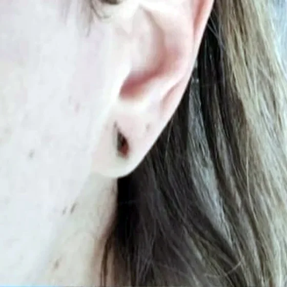
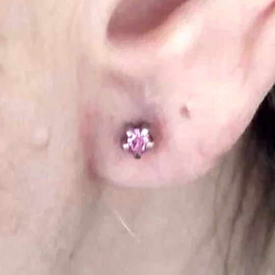
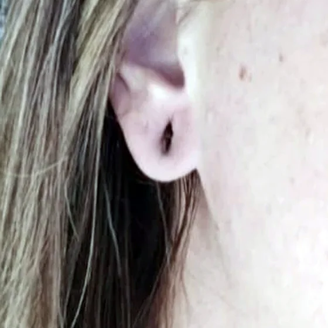
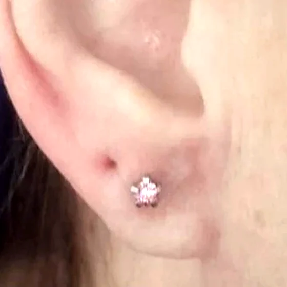
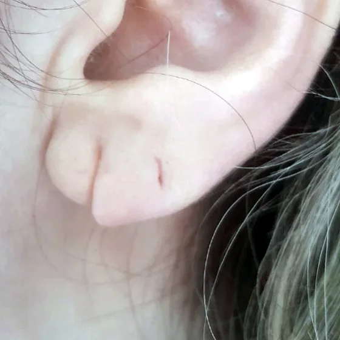
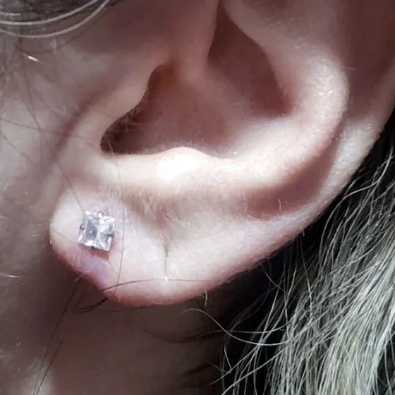
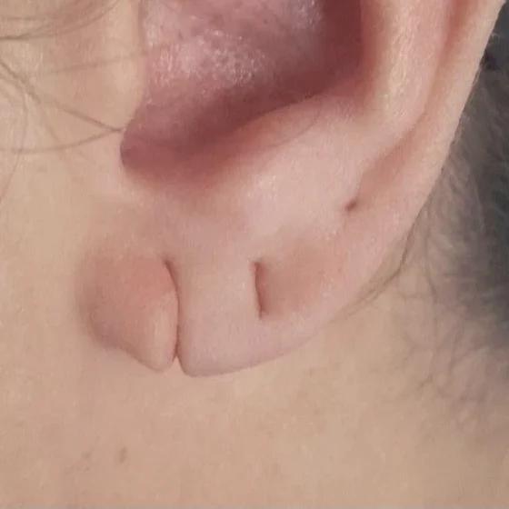
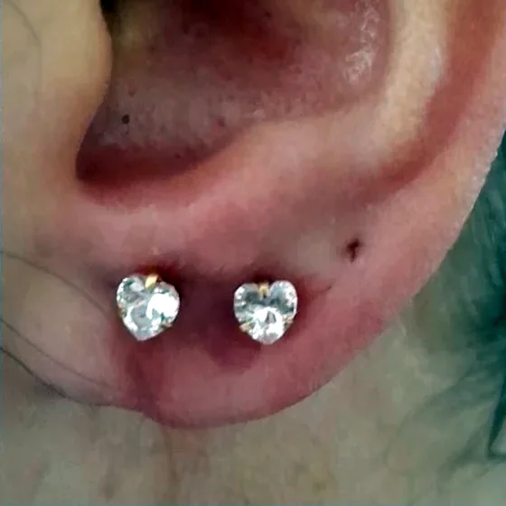
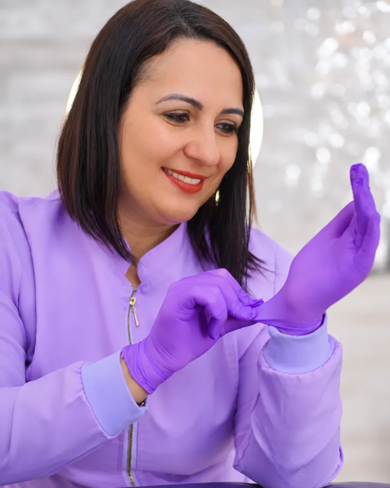
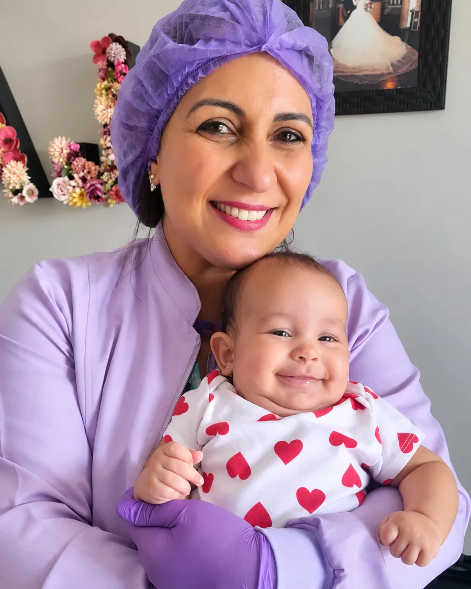

👶
Furo humanizado
O primeiro furo em um ambiente acolhedor e tranquilo — para bebês, crianças e adultos — com respeito ao tempo e ao conforto de cada cliente.
Agendar →Cuidado, delicadeza e segurança para realçar a beleza das suas orelhas — do primeiro furo à recuperação de lóbulos rasgados. Atendimento no Grande ABC e São Paulo.
Cada atendimento é pensado para o seu conforto, com técnica, higiene e um olhar atento aos detalhes.
O primeiro furo em um ambiente acolhedor e tranquilo — para bebês, crianças e adultos — com respeito ao tempo e ao conforto de cada cliente.
Agendar →A lobuloplastia recupera lóbulos rasgados ou alargados, com procedimento seguro e resultado natural. Volte a usar seus brincos favoritos e reconquiste a autoestima.
Quero recuperar →Um momento especial e delicado para as pequenas, pensado para que a experiência do primeiro brinco seja uma lembrança linda.
Agendar →Veja a transformação de quem recuperou os lóbulos. Só mostramos imagens de clientes que autorizaram o uso.

Antes
Depois
Antes
Depois
Antes
Depois
Antes
DepoisOs resultados variam de pessoa para pessoa.

Patrícia LimaEspecialista avançada em furo humanizado, correção de lóbulo, Patrícia une técnica e acolhimento para que cada cliente se sinta segura e bem cuidada.
Mais do que um procedimento, o objetivo é transformar o seu momento em uma experiência única — do primeiro contato ao resultado final.
Conte o que você precisa e tire suas dúvidas diretamente com a Patrícia.
Agende o melhor dia e horário para o seu atendimento.
Avaliação, orientações e procedimento realizados com calma e segurança.
Você recebe todas as orientações para uma cicatrização tranquila.
Acompanhe as promoções de lobuloplastia e garanta valores especiais com pagamento facilitado. Vagas limitadas — fale com a gente e consulte as condições do mês.
Consultar valoresUm ambiente acolhedor, sorrisos e muito carinho em cada atendimento.

Sua avaliação no Google ajuda outras mães e clientes a encontrarem um atendimento de confiança — e leva menos de um minuto.
É uma abordagem que prioriza o acolhimento, o conforto e a segurança de quem fará o furo, respeitando o ritmo de cada cliente — seja bebê, criança ou adulto.
Quem teve o lóbulo rasgado ou alargado e deseja voltar a usar brincos. Na conversa inicial a Patrícia avalia o seu caso e explica como será o procedimento.
O prazo depende da cicatrização de cada pessoa. Você receberá orientações personalizadas após o procedimento.
Grande ABC e São Paulo. Chame no WhatsApp para confirmar o local e os horários disponíveis.
Agende seu horário e transforme sua experiência.